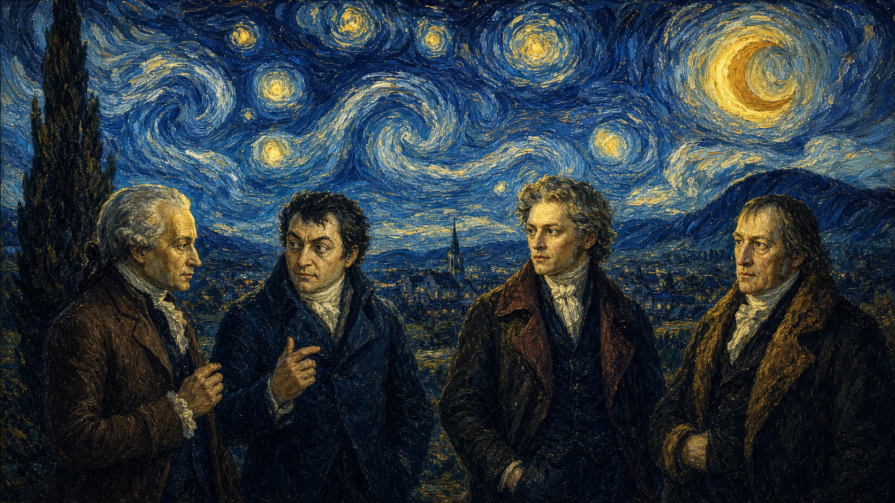
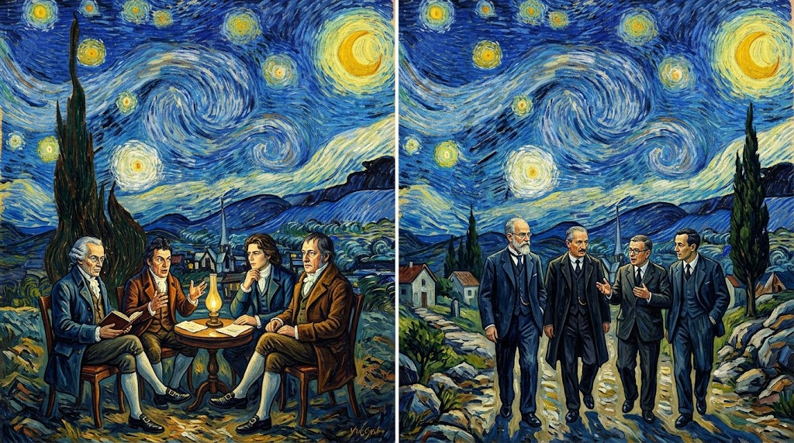
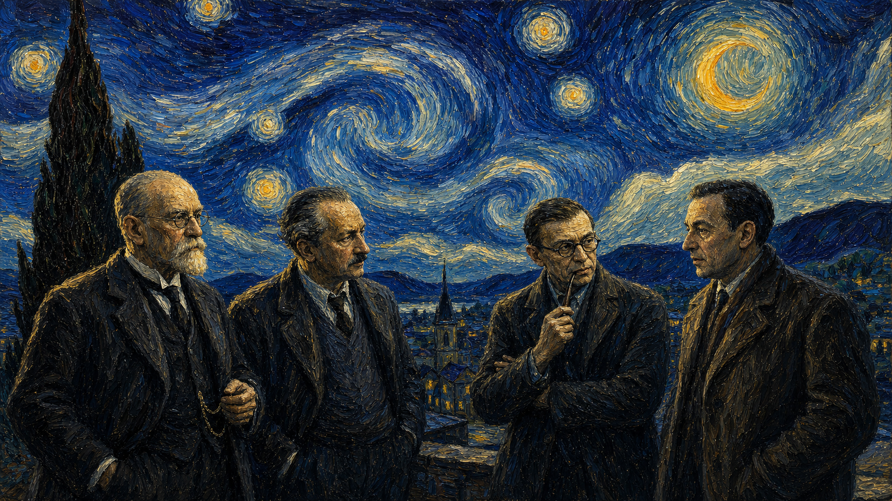

最近一月哲学论文热度观察报告
Google Scholar + PhilPapers/PhilArchive 检索尝试 | 2026-05-19
方法说明
时间口径：2026-04-19 至 2026-05-19。目标是寻找最近一月较受关注的哲学论文或预印本。
Google Scholar：已在登录 Chrome 中访问并检索，但页面返回自动化查询拦截，无法稳定读取 Scholar 排名。为避免违反网站限制，未继续强行抓取。
替代办法：使用 PhilPapers/PhilArchive 的最近新增、可见下载数、期刊/预印本页面、DOI/网页检索结果和主题热度综合排序。因此，“最火”不是官方榜单，而是近月公开可见热度估计。
Top 10 论文与摘要转述
#1 The Absolute from Ground to Limit: Hegel and Deleuze
作者：K. B. Harris
来源与热度：PhilPapers / PhilArchive, added 2026-05-04, visible download count about 40。近一月新增且 PhilPapers/PhilArchive 可见下载数最高的一组候选之一。
链接：https://philpapers.org/rec/HARTAF-24
摘要转述：论文把黑格尔的“根据”和德勒兹的“极限”放在同一个问题场中比较：绝对者不是一个静止终点，而是在生成、限制和自我差异化中显现。作者关心的是形而上学如何在不退回传统实体论的情况下保留系统性。
简评：这篇代表了近来欧陆形而上学的一个走向：重新处理绝对、生成、限制等大词，但不再用经典体系哲学的封闭方式，而是借助差异、过程和边界条件来重建问题。
#2 Process essentialism in medicine
作者：Brandon Boesch
来源与热度：Synthese / PhilPapers, online 2026-05-05。出自 Synthese，近月被 PhilPapers 收录；医学形而上学与科学哲学交叉度高。
链接：https://philpapers.org/rec/BOEPEI
摘要转述：论文主张医学中的“本质”不应只被理解为固定属性，而应被理解为过程性结构。疾病、健康、功能和治疗对象往往随时间展开，因此医学分类需要同时解释稳定性与变化。
简评：它显示科学哲学正在从抽象分类争论走向应用场景：医学、生命过程和实践决策正在推动新的本质主义版本。
#3 The Technologization of Transcendental Illusion
作者：Albert N. M. I. O. E. O. O. A. A. A. A. A. O. Hirschman
来源与热度：PhilPapers / PhilArchive, added 2026-05-08, visible download count about 32。AI与康德式先验幻相结合，下载数靠前，主题紧贴技术哲学。
链接：https://philpapers.org/rec/HIRTTO-5
摘要转述：论文把大型语言模型的“幻觉”理解为一种技术化的先验幻相：错误并非偶然故障，而与系统生成意义和模拟知识的方式有关。文章用康德资源解释为什么技术系统会制造看似合理的知识外观。
简评：这类研究把 AI 错误从工程问题提升为认识论问题，是当前哲学与技术研究最活跃的接口之一。
#4 The Logical Genesis of Evoluism
作者：Albert N. M. I. O. E. O. O. A. A. A. A. A. O. Hirschman
来源与热度：PhilPapers / PhilArchive, added 2026-05-11, visible download count about 30。近月新增且下载数较高，属于体系性形而上学尝试。
链接：https://philpapers.org/rec/HIRTGL-12
摘要转述：论文提出一种名为“Evoluism”的逻辑发生论框架，试图说明存在、变化和发展如何从更基础的逻辑结构中生成。文章强调演化不是外在事实，而可能是思想和存在结构内部的展开方式。
简评：它反映出一种复兴趋势：年轻或独立研究者在 PhilArchive 上发布宏大体系论尝试，把逻辑、过程和形而上学重新连起来。
#5 Xenoepistemics: Toward a General Theory of Non-Human Knowledge
作者：Jordi Vallverdú
来源与热度：Preprints.org / PhilPapers, online 2026-05-05。非人类知识、AI与动物/机器认知交叉，主题热度高。
链接：https://www.preprints.org/manuscript/202605.0165/v1
摘要转述：论文提出“异类认识论”：知识不应只以人类主体为标准，还应纳入动物、机器、集体系统和可能的外星智能。它试图扩展认识论的主体范围，并讨论非人类系统如何感知、表征、学习和校正错误。
简评：这是 AI 时代认识论的代表方向：问题不再只是“人如何知道”，而是“哪些系统能够以何种方式知道”。
#6 Cognitive Succession Ontology: A Layered Framework for the Temporality of Identity and the Emergence of Consciousness
作者：Mingxiang Chen
来源与热度：PhilPapers / PhilArchive, added 2026-05-07, visible download count about 21。意识、身份和时间性的交叉题目，在近月 PhilPapers 候选中较受关注。
链接：https://philpapers.org/rec/CHECSO-4
摘要转述：论文用“认知继承”的层级模型解释身份和意识如何随时间形成。它不把自我看成单一实体，而看作多个认知层次持续接续、整合和重组的结果。
简评：意识哲学正在吸收更多动态系统和层级模型语言，传统“同一性”问题也越来越被时间结构和认知过程重写。
#7 AI and Ideologies: The Case of Academic Writing
作者：Josh May
来源与热度：PhilPapers, added 2026-05-10, visible download count about 19。AI写作、学术规范和意识形态批判交汇，现实讨论度很高。
链接：https://philpapers.org/rec/MAYAIA-9
摘要转述：论文讨论 AI 写作工具如何改变学术写作实践，并指出这些工具并非中性：它们会嵌入关于效率、原创性、劳动、评价和知识生产的意识形态。文章关注的不只是作弊问题，而是学术制度如何被技术重塑。
简评：这类论文说明 AI伦理正从抽象原则转向具体制度：课堂、期刊、同行评议和学术劳动正在成为核心现场。
#8 Perspective, Continuity, and Reconstruction in Philip K. Dick’s The Man in the High Castle
作者：Ryan Paton
来源与热度：PhilPapers / PhilArchive, added 2026-05-07, visible download count about 17。文学哲学、现实建构和视角问题的跨学科条目，下载数居中靠前。
链接：https://philpapers.org/rec/PATACE-2
摘要转述：论文借菲利普·迪克的小说讨论视角、连续性和现实重构。它关心的是，当历史或世界图景被改写时，主体如何维持理解世界的连续性，以及叙事如何暴露现实感的脆弱性。
简评：哲学与文学研究仍是重要支流，尤其当虚构世界能帮助分析现实、身份和历史可能性时。
#9 Preconscious Sovereignty: The Genesis of Immanent Self-Reference in Pre-Intentional Subjectivity
作者：Albert N. M. I. O. E. O. O. A. A. A. A. A. O. Hirschman
来源与热度：PhilPapers / PhilArchive, added 2026-05-10, visible download count about 16。主体性、意向性之前结构和自我指涉问题，属于近期现象学/形而上学热区。
链接：https://philpapers.org/rec/HIRPST-4
摘要转述：论文研究意向性形成之前的主体结构，提出自我指涉可能先于明确意识和对象指向。它试图说明主体并不是从清晰反思开始，而是在前意识层面已经具有某种内在组织。
简评：这体现了主体性研究的走势：不再只分析显意识经验，而是追问经验之前的生成条件。
#10 Epistemic Infrastructure Assurance: Evaluating Research Quality Through Multi-Dimensional Philosophical Metrics
作者：J. A. Okpala
来源与热度：PhilPapers / PhilArchive, added 2026-05-05, visible download count about 14。研究质量评价、知识基础设施和多维指标，回应当前学术评价危机。
链接：https://philpapers.org/rec/OKPEIA
摘要转述：论文提出一种评估研究质量的哲学指标框架，强调研究不只应按引用或产量衡量，还要看概念清晰度、方法透明度、可争辩性、社会嵌入和知识基础设施可靠性。
简评：它指向哲学研究的自我反思：在 AI写作、开放预印本和指标治理时代，哲学也必须重新定义什么算作“好研究”。
走势分析：哲学研究正在往哪里走
第一，AI 正在从伦理学议题扩展为认识论、学术制度和主体性问题。过去几年 AI伦理多集中于偏见、隐私和责任；近月候选显示，研究者更关注 AI 如何改变“知道”“写作”“评价”和“错误”的结构。
第二，认识论正在去人类中心化。Xenoepistemics 一类研究把动物、机器、集体智能纳入知识主体范围，说明传统以个体人类信念为中心的模型正在被扩展。
第三，形而上学出现“过程化”和“生成化”趋势。医学本质主义、黑格尔/德勒兹、主体性发生论等研究都不满足于静态实体，而强调时间、层次、限制和生成条件。
第四，哲学与制度问题结合更紧。AI写作和研究质量评价表明，哲学不只是讨论抽象真理，也在反思大学、期刊、预印本、指标和知识基础设施如何塑造研究。
第五，文学、技术和社会批判继续交叉。科幻文本、AI幻觉、意识形态和世界重构成为哲学分析材料，显示哲学论文越来越依赖跨学科对象来捕捉当代经验。
结论
最近一月的热门哲学研究并没有只集中在传统分支内部，而是围绕 AI、非人类认知、过程形而上学、主体发生和学术制度反思形成若干交叉热点。未来半年，哲学研究很可能继续把 AI 从“技术对象”推进为“认识条件”和“制度条件”来讨论；同时，非人类知识、医学/生命过程、本体论生成模型也会继续升温。
主要来源
1. The Absolute from Ground to Limit: Hegel and Deleuze - https://philpapers.org/rec/HARTAF-24
2. Process essentialism in medicine - https://philpapers.org/rec/BOEPEI
3. The Technologization of Transcendental Illusion - https://philpapers.org/rec/HIRTTO-5
4. The Logical Genesis of Evoluism - https://philpapers.org/rec/HIRTGL-12
5. Xenoepistemics: Toward a General Theory of Non-Human Knowledge - https://www.preprints.org/manuscript/202605.0165/v1
6. Cognitive Succession Ontology: A Layered Framework for the Temporality of Identity and the Emergence of Consciousness - https://philpapers.org/rec/CHECSO-4
7. AI and Ideologies: The Case of Academic Writing - https://philpapers.org/rec/MAYAIA-9
8. Perspective, Continuity, and Reconstruction in Philip K. Dick’s The Man in the High Castle - https://philpapers.org/rec/PATACE-2
9. Preconscious Sovereignty: The Genesis of Immanent Self-Reference in Pre-Intentional Subjectivity - https://philpapers.org/rec/HIRPST-4
10. Epistemic Infrastructure Assurance: Evaluating Research Quality Through Multi-Dimensional Philosophical Metrics - https://philpapers.org/rec/OKPEIA
PhilPapers recent page: https://philpapers.org/recent
本地图片画廊


